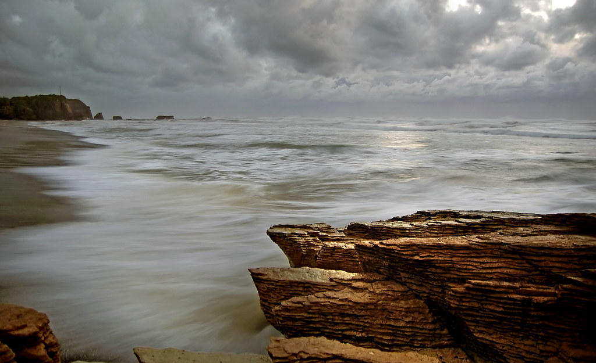
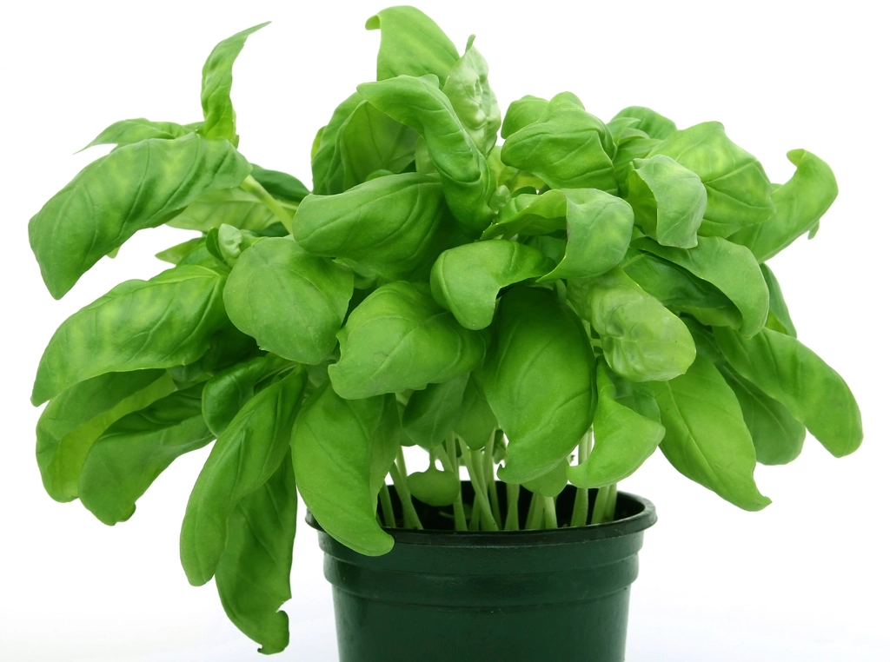
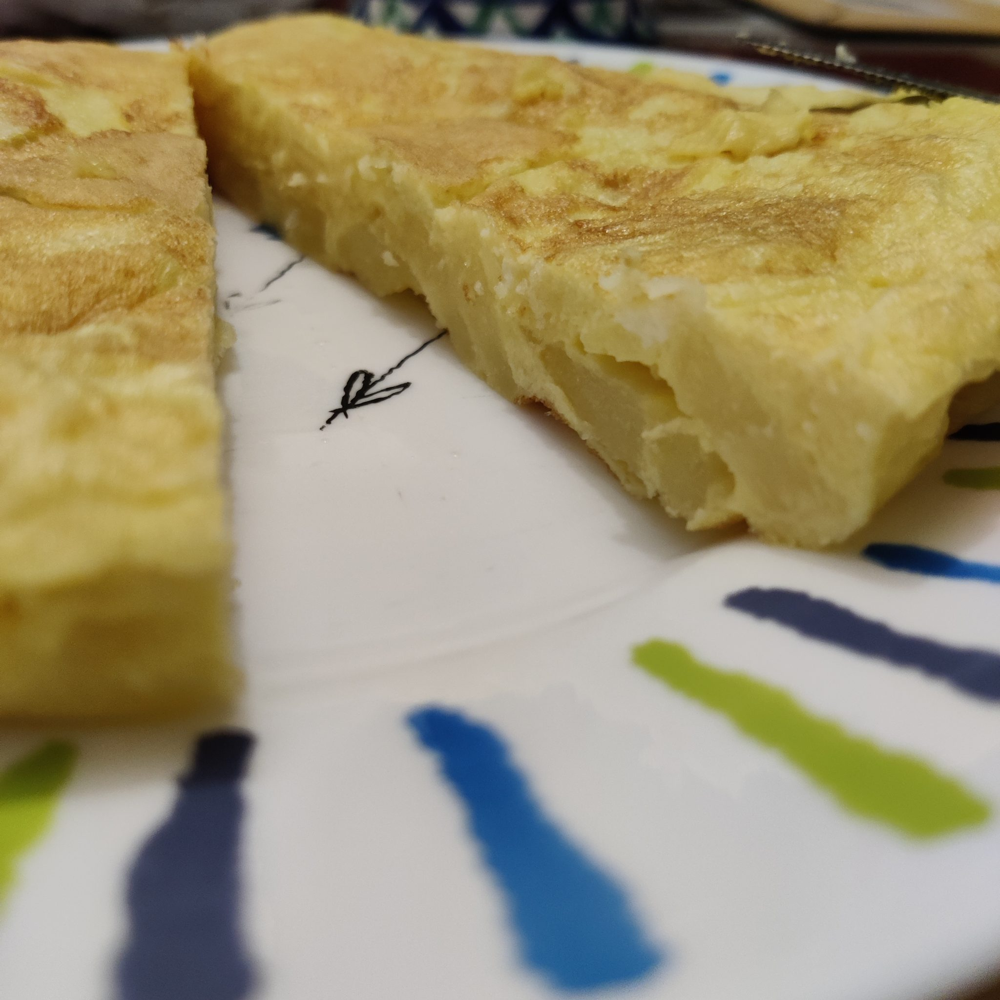
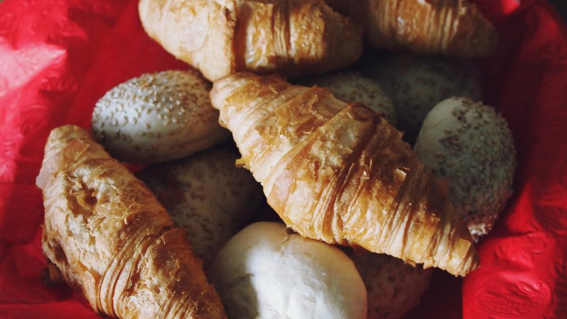

Our Story
海を渡ってきたシェフと、
海を渡ってきたシェフと、
佐渡で生まれた出会い
フランス人オーナーシェフと日本人の奥様、二人の物語と、佐渡食材への強いこだわりをご紹介します。

Chef
海を渡って佐渡にたどり着き、この島の魚介と庭の恵みに出会いました。フランスで培った仕立て方で、佐渡の素材を皿にのせています。
Wife
主人と二人、この店を切り盛りしています。妙宣寺の向かいという小さな場所ですが、佐渡を訪れる方にも、地元の常連さんにも、変わらず温かく迎えたいと思っています。

01
海の恵み
佐渡の海で水揚げされるイクラ、ズワイ蟹、ムール貝、カレイ、タコ。手打ちパスタの具材にも、ムニエルの主役にも、佐渡産の魚介を使っています。素材そのものの味を活かす、余計な味付けをしない仕立てを大切にしています。


02
庭の恵み
庭先で飼育する鶏が産む新鮮な卵は、オムレツや手打ちパスタの生地に。自家製のハーブは、地元産サクランボを使ったソーダなど、オリジナルドリンクの仕立てに使っています。庭から食卓までの距離の近さが、この店の味の土台になっています。

03
手仕事のパンとパスタ
地卵とイカ墨を練り込んだ手打ちパスタ、自家製ピザ、自家製クロワッサン。すべて店の手で仕込んでいます。フランス仕込みの生地づくりと、佐渡の食材を組み合わせる手仕事が、ラ パゴッドの核です。
04
おもてなしの心遣い
予約の時間を気にせず「向かいの妙宣寺をよければ見てきては」と声をかけたり、人数に応じて料理の量をアドバイスしたり。メニューの説明も一つひとつ丁寧に。効率よりも、目の前のお客様との時間を大切にしています。
掲載中の一部の写真はフリー素材のイメージです。実際の店内・お料理写真は貴店ご提供のものに差し替えます。